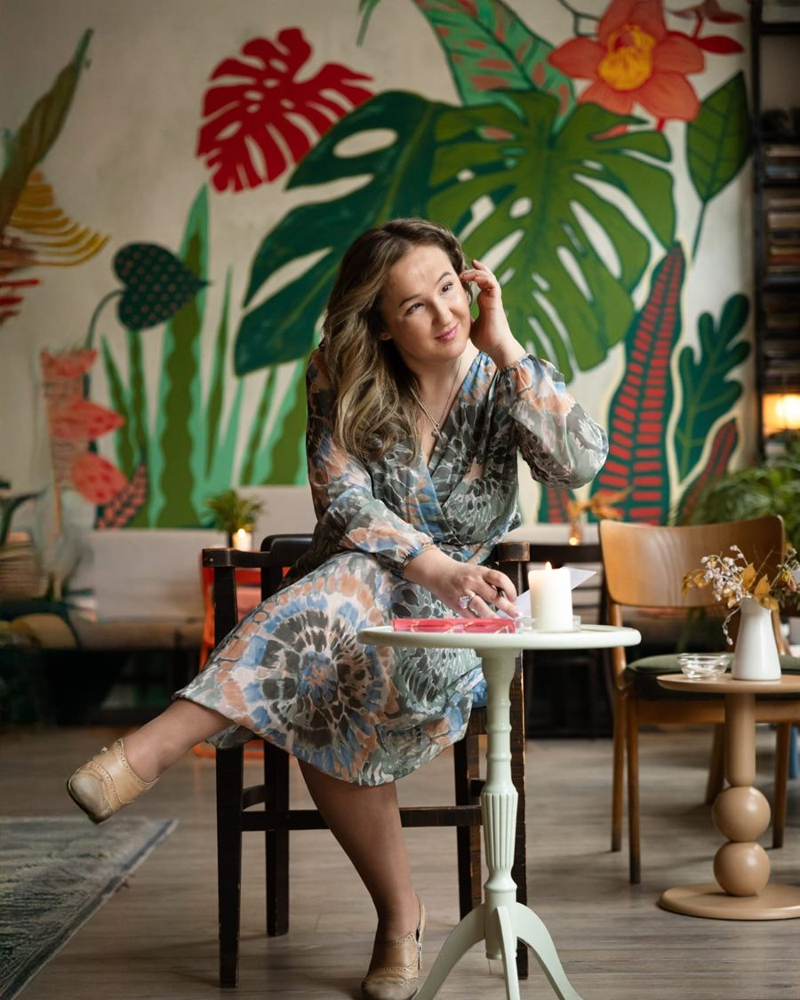

Blog
Moja zapažanja i saznanja o psihologiji i psihoterapiji
Dobro došli na moj blog. Ovde delim razmišljanja, stručne tekstove i praktične savete iz oblasti psihologije, psihoterapije i ličnog razvoja. Nadam se da će vam ovi tekstovi pružiti nove uvide, podršku i inspiraciju za bolje razumevanje sebe i odnosa sa drugima.
-
Ko određuje šta je normalno
Da li smo normalni?
Često se, možda i svakoga dana, zapitamo da li je ono što osećamo normalno. A šta ta reč uopšte znači i kome je merilo?
-
Kome se obratiti
Psihologija je nauka, psihoterapija je umetnost
Psiholog, psihijatar i psihoterapeut nisu isto. O tome po čemu se razlikuju i zašto znanje samo po sebi nije dovoljno.
-
Kako izgleda rad
Psihoterapija je mesto sretanja
Mesto na kojem ne moramo da imamo sve odgovore, da budemo jaki i spremni. Dovoljno je da dođemo takvi kakvi jesmo.
-
Rad na sebi
Bolja verzija sebe
Ne postajemo neko drugi, već učimo da budemo svoji. O samosvesti, granicama i promeni koja ne dolazi iz mržnje prema sebi.
-
Unutrašnji glas
Strah ili intuicija?
Strah i intuicija mogu zvučati veoma slično, a dolaze iz potpuno različitih mesta. Kako da ih razlikujemo.
-
Razgovor sa sobom
Unutrašnji kompas
Koje pitanje nam je potrebno i kada? O razgovoru sa sobom i pitanjima koja nas vraćaju sebi.
-
Privlačnost
Hemija, biologija ili patologija?
Šta nas toliko privlači jedne drugima i kada vredi zastati i pitati se šta se u nama aktivira u tom odnosu.
-
Partnerski odnosi
Muškarci su sa Marsa, žene sa Venere
Da li nas različitosti privlače ili razdvajaju? O tome kako se slušamo, a ne čujemo, i kako da pronađemo zajednički jezik.
Imate temu o kojoj biste voleli da pišem?
Ako vas nešto muči ili zanima, javite mi. Teme koje stižu od vas najčešće su i najkorisnije drugima koji čitaju.
